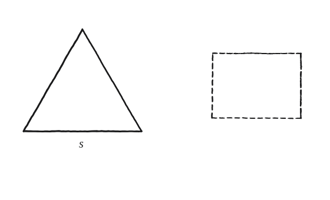
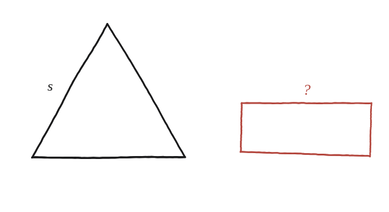

Troba un rectangle amb la mateixa àrea i el mateix perímetre que un triangle equilàter donat.

Dues condicions, dues incògnites
"Mateixa àrea" és una condició; "mateix perímetre" n'és una altra, independent. Un rectangle té dues dimensions lliures (base x, altura y), i hi ha exactament dues condicions per fixar-les totes dues: un sistema de dues equacions amb dues incògnites.
Les dades del triangle, com a constants conegudes
Un triangle equilàter de costat s té perímetre 3s i àrea (√3/4)s² (aquesta última, ja demostrada a la Qüestió 28). Aquests dos valors no són incògnites: són nombres fixos un cop es coneix s. Les incògnites reals són les dues dimensions x, y del rectangle que encara s'ha de trobar.

Plantejar el sistema
Mateix perímetre: 2x+2y=3s. Mateixa àrea: xy=(√3/4)s². Aïllant y de la primera (y=3s/2−x) i substituint-ho a la segona: x(3s/2−x)=(√3/4)s², que reorganitzada dona una equació de segon grau en x: x² − (3s/2)x + (√3/4)s² = 0.
Resoldre-la
Aplicant la fórmula general per a una equació de segon grau: x = s(3 ± √(9−4√3)) / 4. El signe ± dona les dues dimensions del rectangle: si x pren el signe −, y (calculat amb y=3s/2−x) pren automàticament el signe +, i viceversa. Les dues arrels de l'equació no són, doncs, dos rectangles diferents: són els dos costats del mateix rectangle. Val la pena veure per què havia de ser així: la suma i el producte de dos números determinen la parella, i aquí la suma (3s/2) i el producte ((√3/4)s²) són tots dos dades de l'enunciat. Per a rectangles, «mateixa àrea i mateix perímetre» sí que determina la figura; el que no la determina és entre figures de forma lliure.
Per què sempre hi ha solució real
L'equació de segon grau només té solucions reals si el seu discriminant no és negatiu. Aquí, el discriminant és s²(9/4−√3). Com que √3≈1,73 és menor que 9/4=2,25, el factor (9/4−√3) és sempre positiu, sigui quin sigui el valor de s —per tant, aquest discriminant és positiu per a qualsevol triangle equilàter, i sempre existeix un rectangle real amb la mateixa àrea i el mateix perímetre, encara que pugui sortir molt allargat.
x = s(3 ± √(9−4√3))/4, les dues dimensions del rectangle (la mateixa parella amb els papers intercanviats). El discriminant, s²(9/4−√3), és sempre positiu perquè √3<9/4: per a qualsevol triangle equilàter existeix un rectangle real amb la mateixa àrea i el mateix perímetre. I n'hi ha exactament un: les dues arrels de l'equació són x i y, els dos costats del mateix rectangle, no pas dos rectangles diferents.
Comprovació
Amb s=4: perímetre 12, àrea 4√3≈6,93. Resolent el sistema: x≈1,561, y≈4,439. Comprovant totes dues condicions alhora: 2(1,561+4,439)=12 ✓ (perímetre); 1,561×4,439≈6,93 ✓ (àrea).